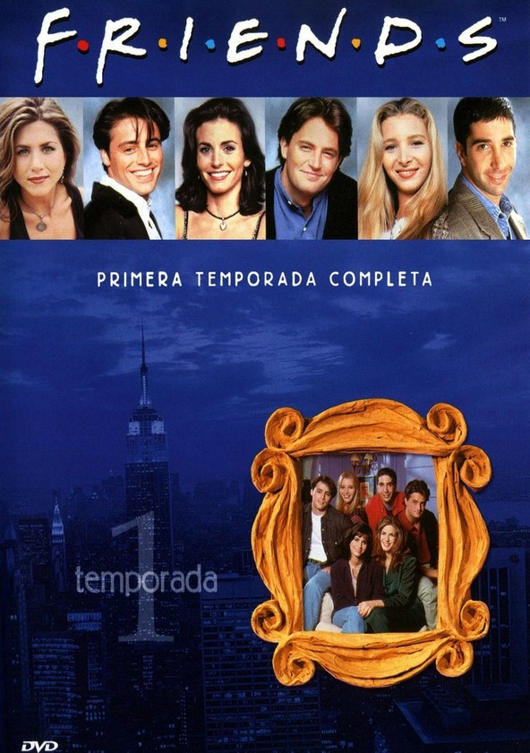
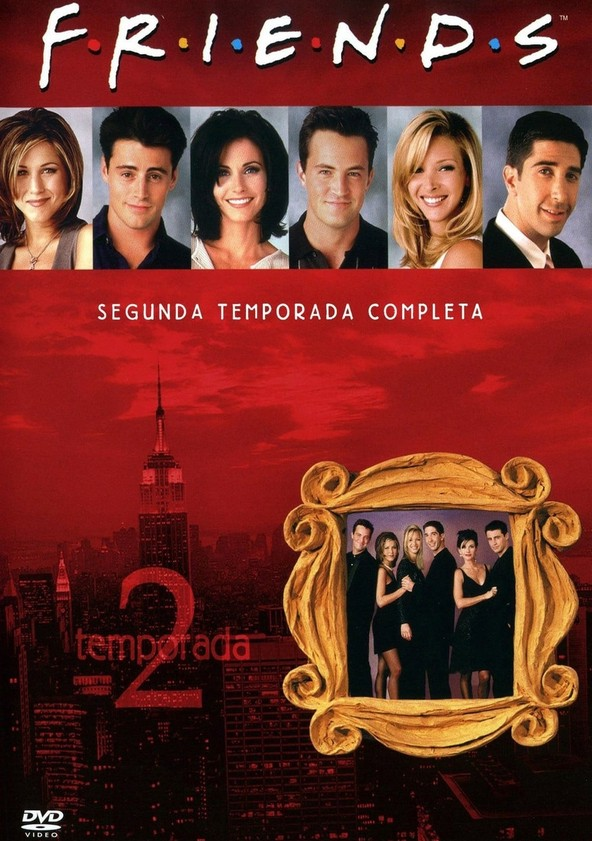
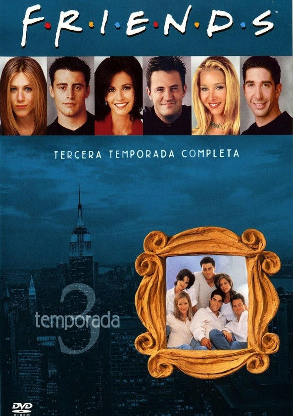
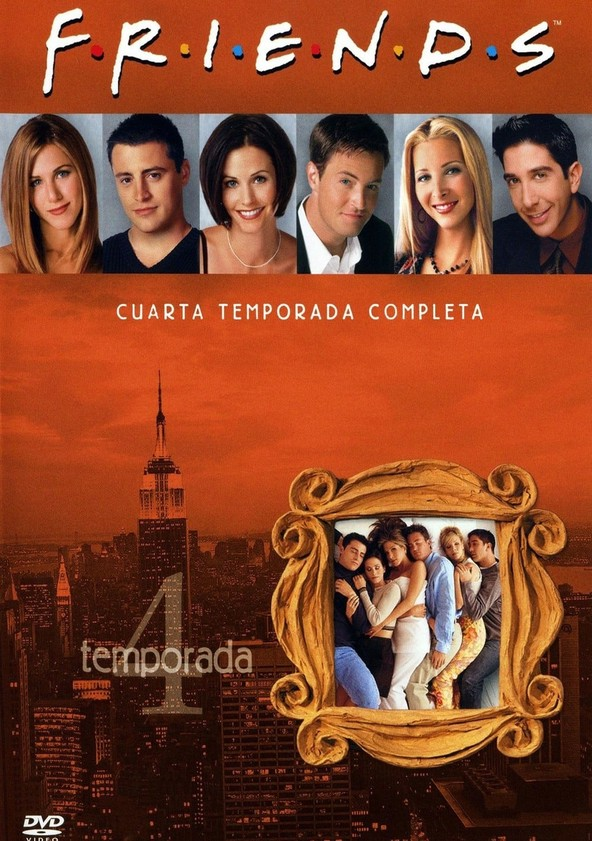
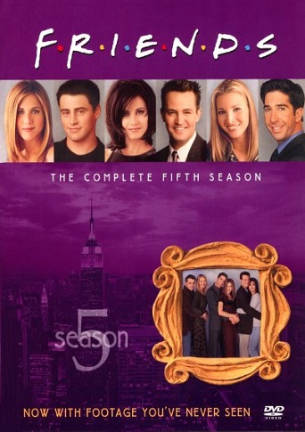
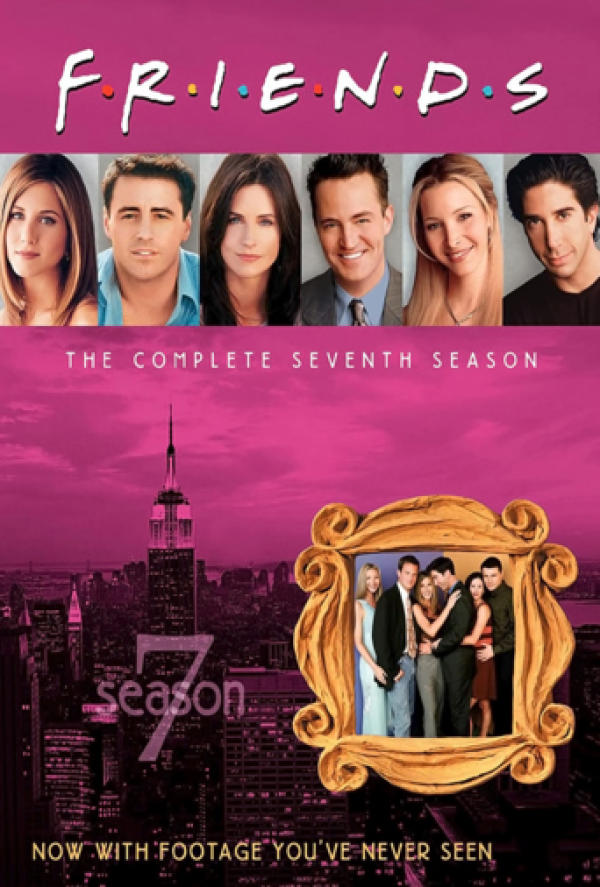
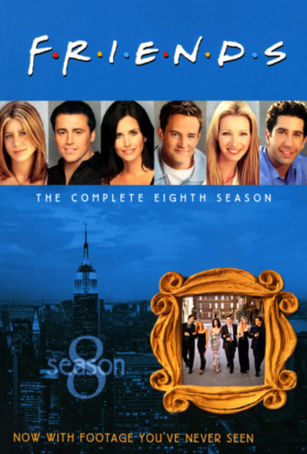
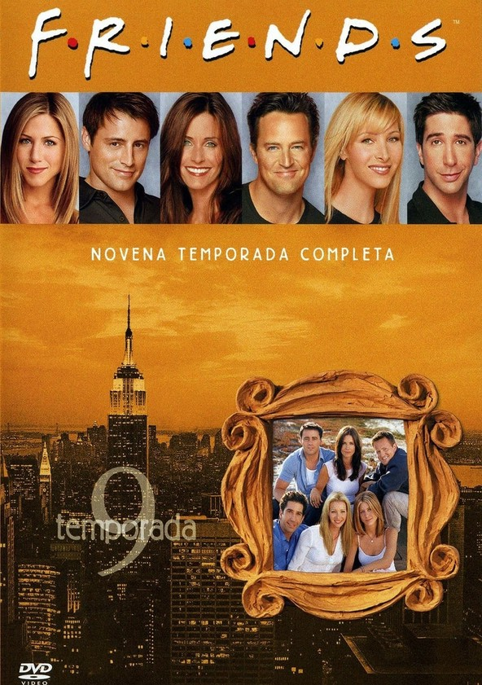
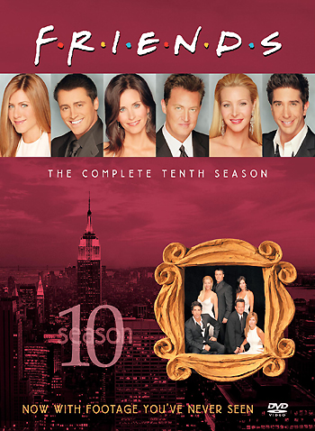

Temporada uno
La primera temporada de la serie 'Friends' se estrenó el 22 de septiembre de 1994 en NBC y consta de un total de 24 capítulos, consiguiendo por entonces una media de audiencia de 24,3 millones de espectadores en Estados Unidos.
La serie comienza en el café Central Perk y nos introduce los seis personajes principales cuando Rachel Green (Jennifer Aniston) aparece por sorpresa vestida de novia después de dejar a su prometido, Barry, plantado en el altar. Allí se encuentra con Monica Geller (Courteney Cox), una chef profesional, y el hermano de ésta, Ross (David Schimmer), paleontólogo. El grupo lo completan Joey Tribbiani (Matt LeBlanc), actor frustrado y amigo de Ross del instituto, Chandler Bing (Matthew Perry) y Phoebe Buffay (Lisa Kudrow), una peculiar masajista.
Temporada dos
En esta temporada 2 la serie asienta su éxito y empieza a convertirse en todo un fenónemo de masas. En cuanto a las tramas, Rachel está dispuesta a declararse a Ross, pero éste vuelve con Julie, una exnovia del instituto.
Monica consigue un importante trabajo como jefa de chefs en un prestigioso restaurante, que lo pierde a causa de aceptar regalos por parte de un proveedor.
Joey, por su parte, consigue su primer gran trabajo como actor en una telenovela, interpretando al neurocirujano Drake Ramoray, y se independiza tras estar viviendo con Chandler. Pero, en una entrevista, afirma ser el autor de la mayoría de las frases de su personaje
Temporada 3
Las tramas de esta tercera temporada comienzan a tener más continuidad, a la vez que mejoran en críticas por parte de los expertos. Chandler se pasa varios capítulos saliendo con Jannice, hasta que Joey pilla a Jannice besando a su exmarido. Al final, Chandler y Jannice rompen, aunque Jannice se mantiene como personaje recurrente en la serie, destacando su peculiar voz y su pesadez.
Por otro lado, Rachel deja su trabajo como camarera en Central Perk y se introduce en el mundo de la moda, como dependienta de unos grandes almacenes de lujo. Ross siente celos de las largas horas de trabajo de Rachel y decide "tomarse un descanso" de su relación con Rachel. Aunque Rachel le pilla liándose con Chloe y rompe con él de forma definitiva
Temporada 4
Ross finalmente decide romper con Bonnie y quedarse con Rachel, aunque insiste que, cuando se acostó con Choloe, estaban "tomándose un descanso", por lo que Rachel vuelve a cortar con él. Joey y Chandler se pelean por una mujer, Kathy, por la que Chandler tiene sentimientos pero que acaba saliendo con Joey. Al final Chandler la bea y Joey y Chander acaban temporalmente enemistados.
Phoebe pierde su trabajo como masajista tras liarse con uno de los clientes, y acaba acompañando a Monica en una aventura empresarial, realizando catering a domicilio. Pero cuando Monica recibe una oferta para ser chef jefa en un restaurante, acaba aceptándola. Phoebe, por su parte, decide quedarse embarazada para que su hermano pueda tener hijos por gestación subrogada.
Temporada 5
La quinta temporada arranca tras la boda de Ross y Emily, cuando Ross mencionó a Rachel en la ceremonia. Emily enfurece y Rachel vuelve a admitir su amor su por Ross, aunque le recomienda que intente salvar su matrimonio. Las cosas no salen bien por culpa de los celos de Emily, y la pareja se separa. Ross acaba pagándolo en su trabajo, y el museo le suspende de empleo, por lo que acaba mudándose con Joey y Chandler antes de buscarse un apartamento en el edificio de al lado.
Por otro lado, tras empezar a salir juntos, Monica y Chandler intentan mantener en secreto su relación, aunque a medida que avanza la temporada acaban por desvelarla.
Temporada 6
La sexta temporada arranca desvelando que Ross y Rachel se casaron borrachos en la capilla de Las Vegas, aunque ninguno de los dos lo recuerda. Ross le promete a Rachel la anulidad, aunque nunca la pide para no tener otro matrimonio fracasado, y, ya fuera de plazo, tienen que divorciarse si finalmente quieren disolver la boda.
Por otro lado, Monica y Chandler deciden irse a vivir juntos, lo que obliga a Rachel a irse a vivir con Phoebe, y las cosas no terminan de arrancar muy bien entre ellas. Además se les quema el piso.
Temporada 7
En cuanto a tramas, la temporada 7 se centra en los preparativos de la boda de Monica y Chandler y todos los problemas que estos encuentran. Mientras, Joey vuelve a la telenovela 'Los días de nuestra vida' después de cancelarle su otra serie. Su personaje, el Dr. Drake Ramoray, llevaba cuatro años en coma y revive con un transplante de cerebro de otro personaje. También, Phoebe hace obra en su piso y manda a Rachel a vivir con Joey.
Por otro lado, Rachel es ascendida en Ralph Lauren y tiene que contratar a un asistente. Elige a un guapo joven, Tag Jones, en lugar de una mujer preparada. Tag y Rachel comienzan una relación, que deben mantener en secreto del resto de sus compañeros de trabajo, aunque finalmente Rachel decide cortar con Tag.
Temporada 8
La octava temporada justo arranca donde acabó la anterior, en el convite de la boda de Monica y Chandler. Se centra en el embarazo de Rachel, que se confirma mediante un segundo test de embarazo. Pronto se descubre que Ross es el padre, y los dos llegan a un acuerdo para criar a su hijo juntos sin volver a mantener una relación sentimental. Por tanto, Ross empieza a salir con Mona, una compañera de trabajo de Monica.
Joey descubre que empieza a tener sentimientos por Rachel, y la anima a irse a vivir al apartamento de Ross para hacerle partícipe del embarazo. La intromisión de Rachel pronto acaba por espantar a Mona, que rompe con Ross. Joey confiesa a Ross que está enamorado de Rachel, antes de declararse a la propia Rachel, que lo rechaza.
Temporada 9
Por un lado, las tramas se centran en los problemas de Monica y Chandler para quedarse embarazados. Primero él se muda a Tulsa a trabajar y Monica cambia de trabajo a otro restaurante. La pareja pasa demasiado tiempo separados y Chandler decide dejar su trabajo para estar más cerca de Monica. Pese a todo, la pareja acaba descubriendo que son físicamente incapaces de ser padres y, tras considerar muchas opciones, deciden adoptar.
Por otra parte, Ross y Rachel siguen viviendo juntos con su hija Emma tras el malentendido de la petición de matrimonio de Joey. Rachel se piensa que su compañero de trabajo Gavin quiere quedarse con su puesto, y vuelve antes de tiempo a Ralph Lauren. Al final Gavin está interesado en mantener una relación con Rachel y, aunque ésta le rechaza, Ross se entera de que se han besado, y empieza a salir con otras mujeres para vengarse.
Temporada 10
En cuanto a tramas, la temporada 10 sirve para cerrar las historias de todos los personajes. Joey y Rachel intentan empezar a mantener una relación, pero tras varios intentos desastrosos, deciden que lo mejor es seguir siendo amigos. Rachel es despedida de Ralph Lauren cuando su jefe la oye hacer una entrevista de trabajo para Gucci. Finalmente, Louis Vuitton le ofrece un trabajo en París.
Por otra parte, Joey casa a Phoebe y Mike en el Central Perk en medio de una tormenta que paraliza la ciudad. Chandler y Monica, por su lado, encuentran por fin a una madre embarazada que quiere darles su hijo en adopción. Deciden comprarse una casa más grande en los suburbios y mudarse allí para criar al niño, lo que despierta los celos de Joey, que no quiere quedarse sin sus amigos. Finalmente, Monica y Chandler acaban teniendo gemelos.
